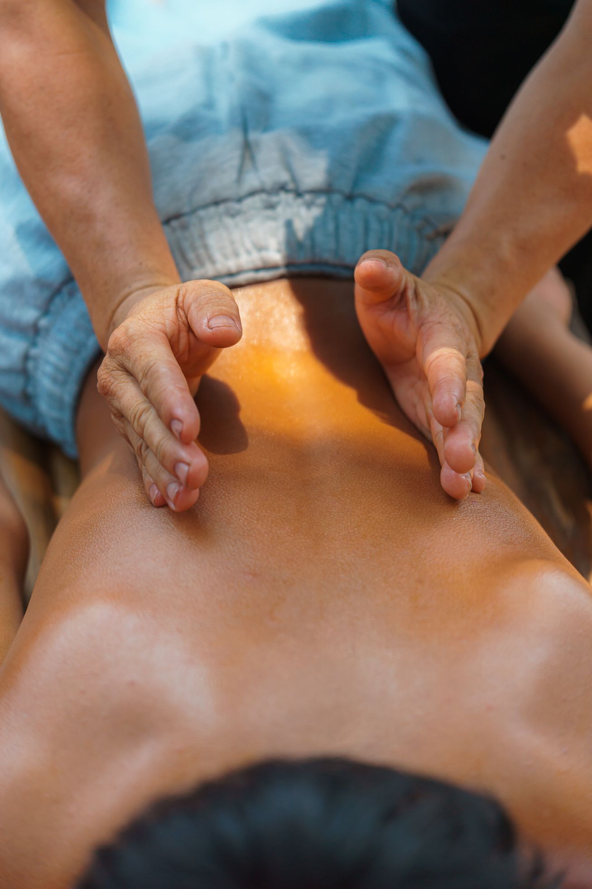

Masajes terapéuticos
Masajes completos y descontracturantes para aliviar contracturas, dolores de espalda y cuello, y descargar el estrés acumulado.
Cuerpo completoMasajes terapéuticos, reflexología podal, drenaje linfático y Flores de Bach. Un espacio tranquilo para soltar tensiones, descansar de verdad y reencontrar tu equilibrio.
Lo que ofrezco
Cada sesión se adapta a lo que tu cuerpo necesita ese día. Sola o combinando técnicas, siempre con tiempo y sin apuro.
Masajes completos y descontracturantes para aliviar contracturas, dolores de espalda y cuello, y descargar el estrés acumulado.
Cuerpo completoA través de puntos precisos en los pies estimulo el descanso, mejoro la circulación y ayudo a que todo el cuerpo encuentre su equilibrio.
Desde los piesManiobras suaves y rítmicas que ayudan a eliminar líquidos, desinflamar y sentir las piernas y el cuerpo más livianos.
Suave y profundoLas gotas de Bach acompañan lo emocional: ansiedad, angustia, momentos de cambio. Preparo una fórmula personalizada para vos.
Equilibrio emocionalTambién trabajo con Técnicas RE-MA-CA · Combino terapias según cada persona.
Sobre mí
Hace años acompaño a personas de Mar del Plata a través del masaje y las terapias holísticas. Creo en un abordaje integral: el cuerpo, las emociones y el descanso están conectados, y cuando uno se ordena, los demás lo agradecen.
En cada sesión me tomo el tiempo de escucharte y elegir juntas qué necesitás ese día. Nada de recetas iguales para todos: tu cuerpo tiene su propio ritmo, y mi trabajo es acompañarlo.
"El cuerpo guarda todo lo que la mente no dice.
Darle un rato de calma también es cuidarte."
— Liliana
Cómo es
Me contás qué te pasa o qué venís buscando por WhatsApp y coordinamos día y horario.
Al llegar conversamos sobre cómo estás para elegir juntas la terapia que mejor te va hoy.
Un rato solo para vos, en un espacio tranquilo, con la técnica indicada y todo el tiempo que necesites.
Si hace falta, sumamos Flores de Bach o pequeñas pautas para que el bienestar siga en casa.

Para qué te sirve
Aflojás contracturas, cuello y espalda cargados por el día a día.
El sistema nervioso baja un cambio y dormís mejor.
El drenaje ayuda a desinflamar y sentir el cuerpo más ligero.
Un espacio para bajar la ansiedad y reconectar con vos.
Dónde y cuándo
Atiendo con turno previo en Mar del Plata centro. Escribime por WhatsApp y coordinamos el día que mejor te quede.
Atención con turno previo
Coordinamos por WhatsApp
Terapéuta matriculada